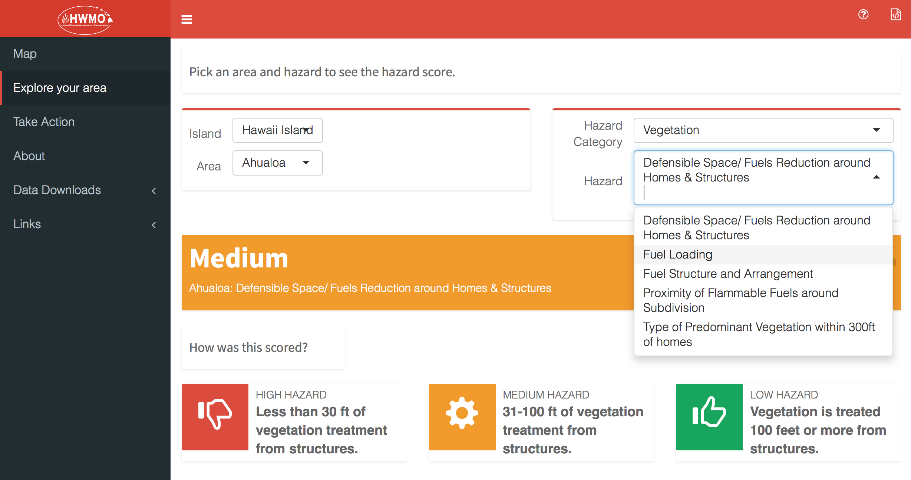
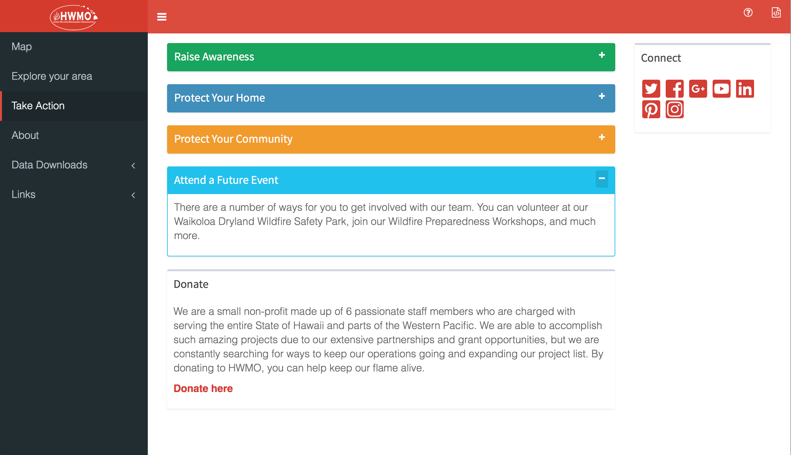
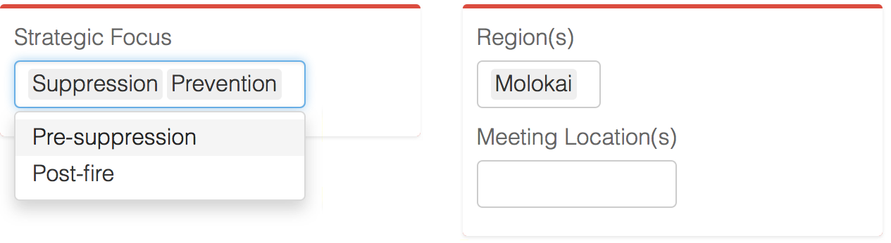

Navigation
- Header
- Sidebar & menu items
- Show/hide sidebar
- Help
- See original code on github
Menu items
Map
Map navigation
- Use the +/- keys to zoom in and out of the map
- Pan around the map by clicking and dragging with your mouse
- Use to zoom back out to Hawai'i
- If you get lost, try the zoom bookmarks to get to East (E), Central (O), or Western (W) islands
Map data
Interact with the data by choosing a layer to look at on the righthand side of the map. Notice the change in legend in the lower lefthand corner. To get more detail about individual areas, click to see a popup.
Overlay layers
In addition to the map layers available in the dropdown menu on the side, there are also overlays you can use to compare. In the image below, individual fires are aggregated into clusters. Drill down to find dates of individual events.
Fire graph
The graph to the right of the map contains all fires in the zone visible in the map window. To see exactly what is measured in the graph, be sure to turn on one of the historical fire overlays.
Notice changing the "Time" X axis from Year to Month allows you to see seasonable patterns. On the other hand, the "Statistic" Y column has options to go from just the number of fires historically in the map area to see their relative destructiveness (fires by average acrage bured)
Explore your area

On this page you can find out hazard information for individual communities.
Scroll down or start typing an island to select where you want to learn about. Find your community in the Area drop down list.
Hazard scores are divided into 5 categories:
- Subdivision (eg, the arrangement of houses and roads)
- Fire Protection (eg, access to the fire department and related agencies)
- Vegetation (eg, the impact of local trees and brush on fire hazard)
- Building (eg, how fire resilient typical buildings in the community are)
- Fire environment (eg, environmental conditions like rainfall)
Select a hazard category and then an individual hazard in order to see the score for the community you selected.
Note that explanations for how each community was scored are right underneath.
Take action

The take action page provides information about what you can do to increase fire resilience in your community and across Hawai'i. Click on an action item to reveal specific information. Be sure to take a look at our videos and lots of links!
This page also contains links to all our social media sites if you want to connect with us.
About
For more detailed information about the data contained in the web app, go to the About page. Here is also more information on how we think you might use the app and license information if you want to use our data in your own projects.
Data downloads
If you are interested in looking at data from across the state in a table format, go to the data downloads page where you can look at the original data used to make the map as well as download it. There are two sub-pages under the Data Downloads page, Community Meeting Info and Hazards.
Community Meeting Info
Here is where you can look at all the priorities identified in community meetings about wildfire awareness. Pick a focus and a Community Wildfire Protection Plan (CWPP) region to sort the data, then click the download button on the upper right to receive either all or subset you've selected. The download comes in a comma separated values (CSV) format.

Remember that you can choose more than one region or strategic focus to browse.
Hazards
This works just like the Community Meeting Info download page except for hazard data. Notice how you can sort the table columns such that you can either look for a specific community alphabetically or organize the table by hazard score. You can also leave the filters blank and search by keyword.
Links
Click on the Links menu item to access links to the HWMO main website and to the code we used to build the app!
return to app